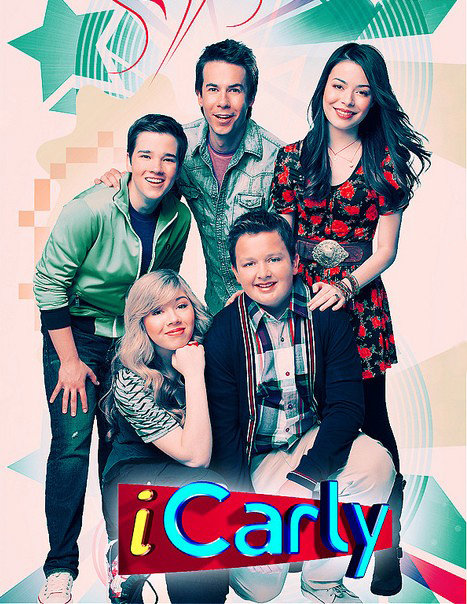
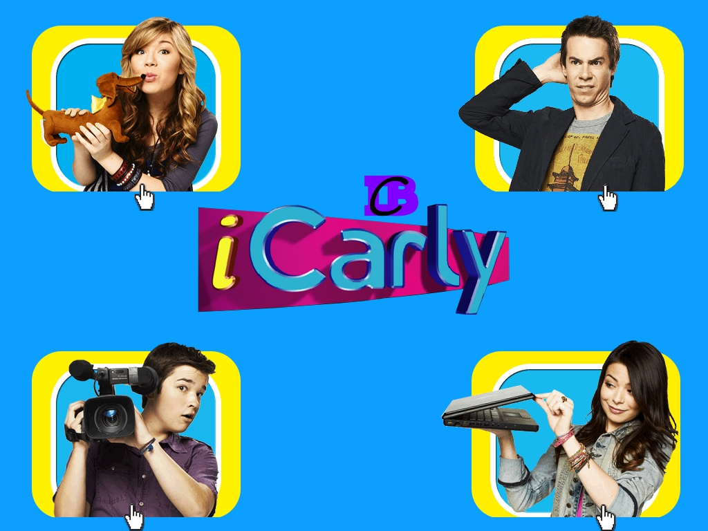
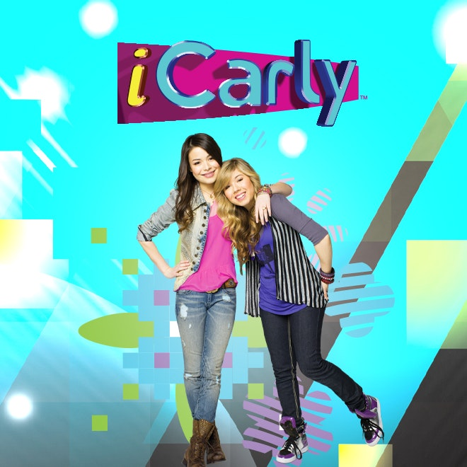
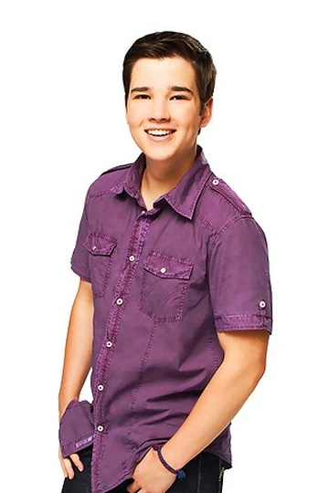
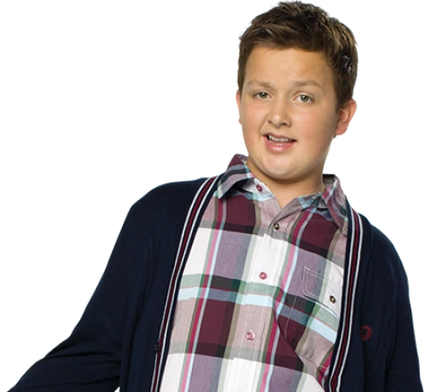

Carly Shay
Miranda Cosgrove



Miranda Cosgrove
Jennette McCurdy

Nathan Kress
Jerry Trainor

Noah Munck
2007.
Dan Schneider.
Nickelodeon.
ICarly é uma serie onde os personagens criam um website, e podem falar e fazer o que quiserem.
2012
iCarly foi uma das séries de grande destaque da Nickelodeon entre o público infantil e adolescente.
Confira as novidades do programa.
Carly e Sam prepararam um novo episódio cheio de desafios, brincadeiras e momentos engraçados para todos os fãs.